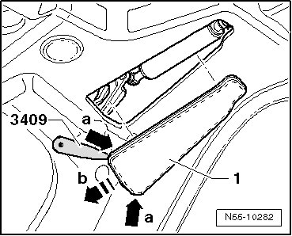
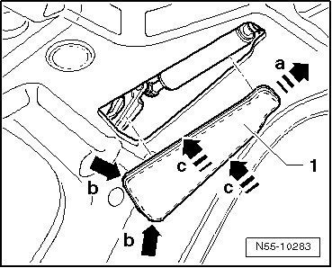

Gas-Filled Strut Cover, Through 10.2006
Rear Lid
Gas-filled Strut Cover, through 10.2006
Removing
- Headliner is removed.

- Loosen cover - 1 - at rear corners - a arrows - with Trim Removal Wedge (3409).
- Pull cover back in - direction of arrow b - and remove.
Installation
- Slide cover - 1 - into small opening as far as stop - arrow a -.

- Press on both corners at the same time - b arrows -.
- Press on edge all around, from back to front - c arrows -.
• Check cover to make sure it makes continuous contact and is not pressed on too far.